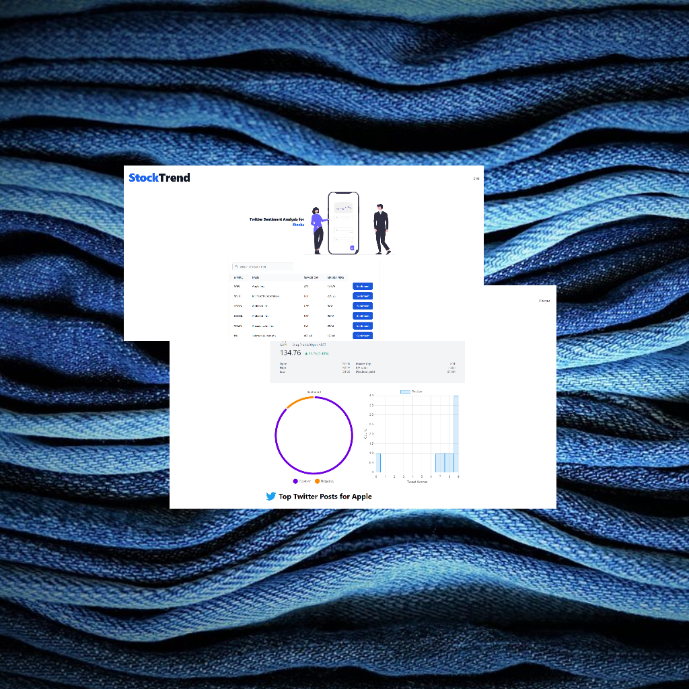
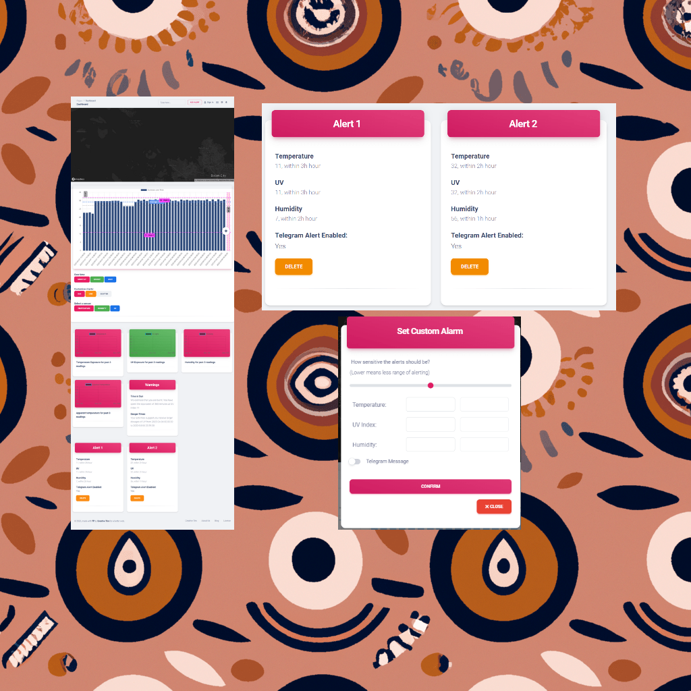
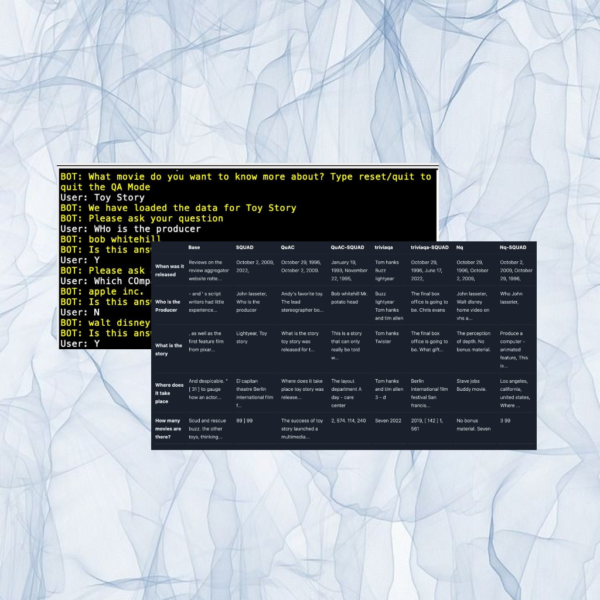
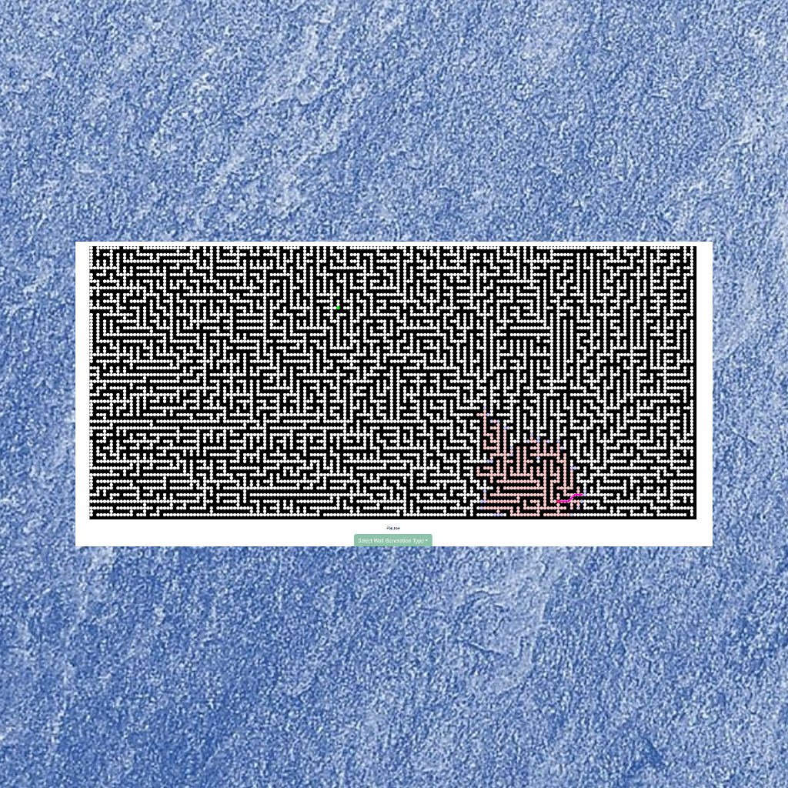

< about me >
Here are some technologies that I have been working with:
- Javascript
- Typescript
- Python
- Node.js
- Tensorflow
- Svelte
< projects >
Here are some projects that I have developed both in my free time and for
various university projects over a variety
of fields & interests that allowed me to learn more. In the future I will continue to add blog posts
in order to show the lessons and insights I gained
from each project
.png)

.png)
An implementation of chess in Python & Pygame. A custom chess engine is also built in to allow the user to play against an engine opponent. Currently the engine has a basic implementation using minimax with alpha beta pruning and iterative deepening search with the addition of a transposition table for additional efficiency.
- Python

Question & Answer chatbot developed as a university group project based off of an extractive text model in order to answer questions about movies. Fine-tuned a RoBErTa model using wikipedia question & answer datasets while scraping specific movie data from wikipedia.
- Python
- Tensorflow
